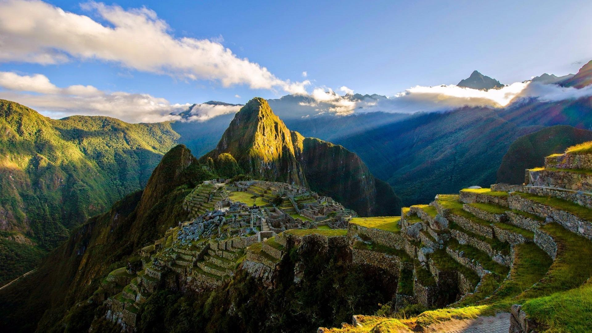
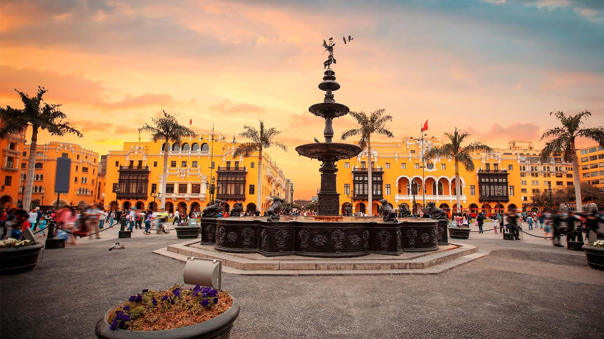
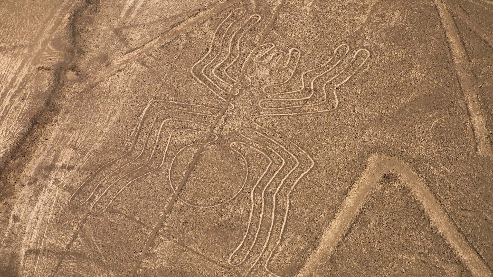

Peru

Machu Picchu
Auf einem Berggipfel inmitten eines Tropenwaldes gelegen, gilt Machu Picchu als die Touristenattraktion schlechthin in Peru. Das historische Heiligtum ist ein besonderer Ort, der Touristen nicht nur wegen seiner überwältigenden architektonischen Schönheit in seinen Bann zieht, sondern auch wegen seines bedeutenden historisch-kulturellen Erbes, das dazu geführt hat, dass Machu Picchu auf der ganzen Welt gewürdigt und bewundert wird.
Lima
Lima ist Liebe auf den ersten Blick, nicht nur weil es die einzige südamerikanische Hauptstadt am Meer ist, sondern auch wegen seiner Geschichte und Tradition. Die Besichtigung des historischen Zentrums, das zum Weltkulturerbe erklärt wurde, zeigt das Zusammenleben von Vergangenheit und Gegenwart.
Nasca-Linien
Wer hat sie geschaffen? Was sieht man? Die Nasca-Linien sind noch immer ein ungelöstes Geheimnis. Diese Geoglyphen, mit einem einzigen Strich gezeichnet und einige bis zu 300 Meter groß, warten immer noch darauf, dass wir ihre Botschaften verstehen. Mittlerweile wurden sie zum Kulturerbe der Menschheit erklärt.
